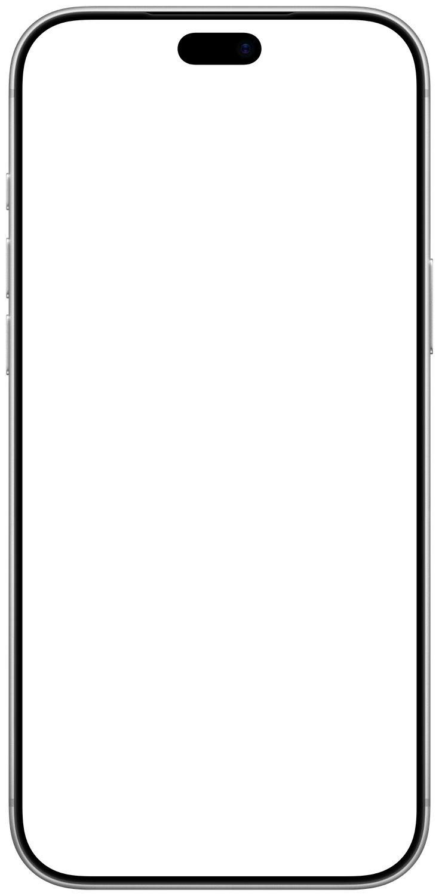
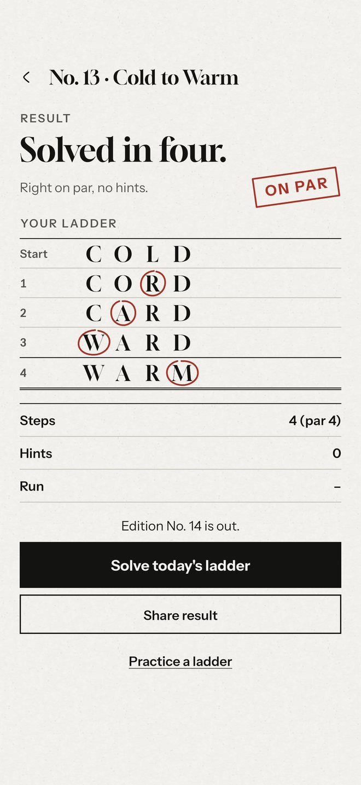
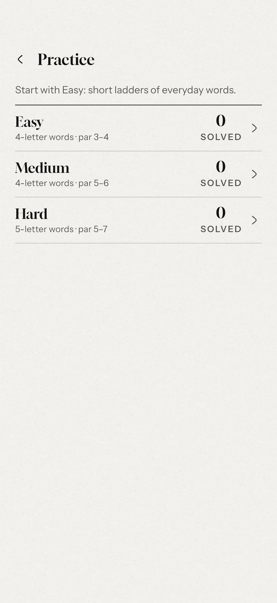

Paper Ladder
A calm daily word ladder for adults who like a daily puzzle. Change one letter at a time to get from one word to another, and every step must be a real English word.
Paper Ladder: Daily Word Game is free on iPhone and Android. It has no account and no login, and your games, run and stats stay on your phone.


The ladder 
Today 
Result 
Practice 
Your record
How it works
Start with today's puzzle.
Everyone gets the same puzzle each day, with a start word and a target word.
Change one letter at a time.
Each step must be an ordinary English word. A step that is not a word is refused, with the reason shown, and the changed letter is marked on the ladder.
Finish at par, then share.
Par is the shortest ladder for that day's puzzle. Share your result without spoilers: the answer words are never shown.
The three moments
Today's puzzle.
The Home screen shows the day's start and target, and the ladder grows one rung at a time.
A step refused, a hint offered.
A word that is not allowed is turned back with a plain reason. A free first hint reveals the next word without spoiling the rest.
Result and streak.
Your steps are set against par, with a spoiler-free share and your streak.
Your result, without spoilers.
Questions
Is it free?
Yes. It is supported by ads: a small banner on screens outside the game, and an optional rewarded video if you want an extra hint. There are never ads while you play.
Do I need an account?
No. There is no login and no server. Your games, run and stats are stored only on your phone.
Can I play without a connection?
Yes. The daily puzzle is made on your phone from the date, and practice mode works offline.
What if today's puzzle is too hard?
Practice mode has Easy, Medium and Hard ladders, as many as you like. Each one is a fresh puzzle, so you can practise without touching your daily run.
Which words count?
Ordinary English words, including British spellings.
Today's ladder is waiting.
Free on iPhone and Android. No account.